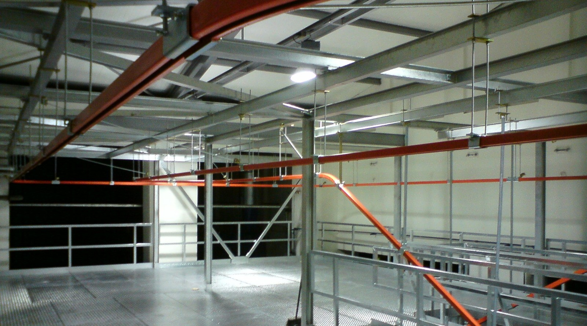

Společnost S.O.F. s.r.o. odkoupila na začátku roku 2004 aktiva a práva společnosti Doman Praha s.r.o. Společnost Doman Praha s.r.o. založili zaměstnanci jednoho odboru Výzkumného ústavu transportních zařízení. V tomto odboru byly do roku 1991 zajišťovány vývoj a konstrukce dopravních a manipulačních zařízení pro renomované československé výrobce dopravní a manipulační techniky. Máme proto v našem oboru dlouholeté zkušenosti a rádi je použijeme právě pro Vás. V současné době naše společnost zajišťuje kompletní dodávky dopravních a manipulačních zařízení na klíč včetně montáže a uvedení do provozu.
